Length of Britain
End to end across Britain, Land's End up to John o' Groats.
There are 1,745 km between the two ends of the Length of Britain, and John o' Groats is the far one. The first landmark is Land's End. At 5,000 steps a day it's about 69 weeks of the walking you do anyway. All 47 landmarks are below, in walking order, with a photograph and the story of the place.
- 1,745km end to end
- 47landmarks
- 69 weeksat 5,000 steps a day
- John o' Groatsfinishes at

The landmarks of Length of Britain
47 landmarks, in walking order. Each photograph is by the person credited beneath it, used as they licensed it.
-
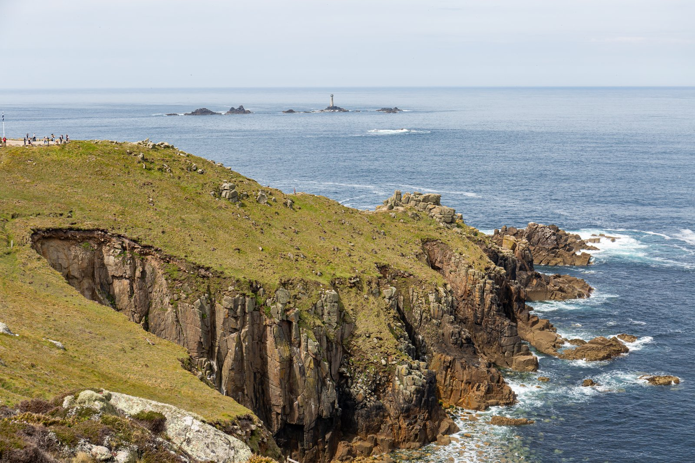
Photo: Balon Greyjoy · Wikimedia Commons, CC0 Land's End
Granite cliffs crumble into the Atlantic at Land's End, the far south-western tip of England, where the Penwith peninsula finally runs out of land. The famous signpost counts off 874 miles by road to John o' Groats, though the walking route runs considerably longer. From this Cornish headland the whole length of Britain stretches north.
-
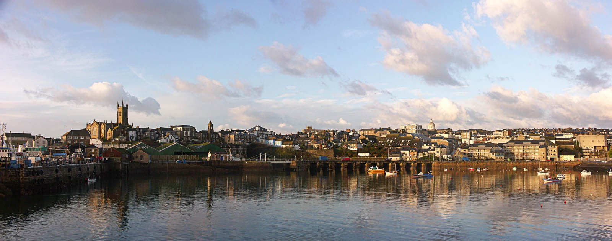
Photo: The original uploader was Marktee1 at English Wikipedia. · Wikimedia Commons, CC BY-SA 3.0 Penzance
Penzance is the first proper town of the walk, its promenade curving along the sweep of Mount's Bay. Out across the water sits St Michael's Mount, a tidal island crowned by a medieval castle and linked to the shore at low tide by a cobbled causeway. Beyond the town the lanes climb back into open country.
-
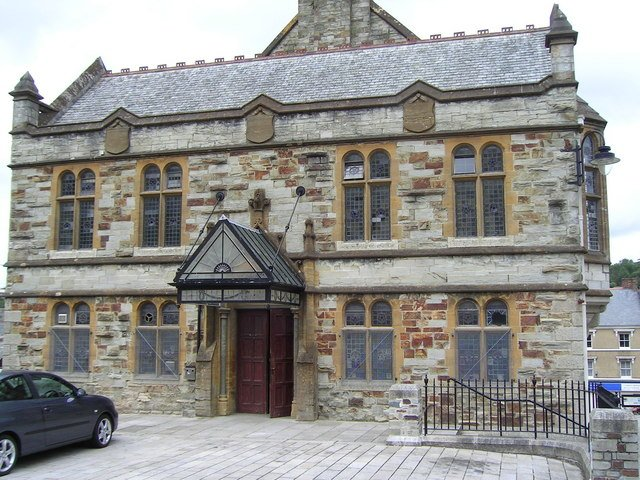
Photo: Michael Pierce · Wikimedia Commons, CC BY-SA 2.0 Bodmin
Inland at Bodmin, the old county town, granite streets feel solid after the coastal lanes. This was where Cornwall kept its main gaol, and the Camel Trail passes close by, an old railway line now smoothed into a walking path. Beyond the town the ground rises in a long pull up onto the moor.
-
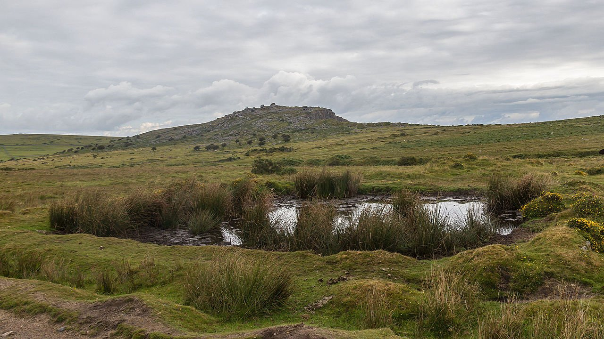
Photo: Raimond Spekking · Wikimedia Commons, CC BY-SA 4.0 Bodmin Moor
The granite uplands of Bodmin Moor spread windswept and bare, the high heart of Cornwall. Brown Willy and Rough Tor rise above the heath, and on the southern slopes stand the Hurlers, three Bronze Age stone circles set in a line. From the moor the road bends on toward Devon.
-
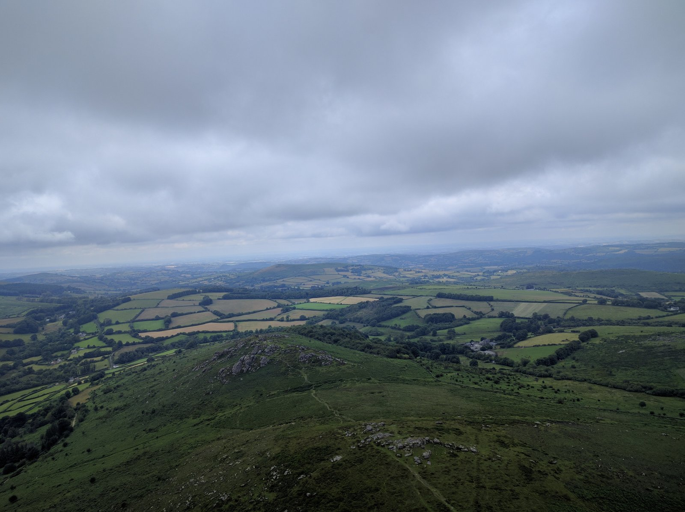
Photo: Caedmon Mullin · Wikimedia Commons, CC BY-SA 4.0 Okehampton & Dartmoor
A ruined Norman castle keeps watch above Okehampton, on the northern edge of Dartmoor. To the south lie the tors and bogs of England's last great southern wilderness, high granite moorland grazed by semi-wild ponies. North and east the land drops away toward Tiverton and the Somerset levels.
-
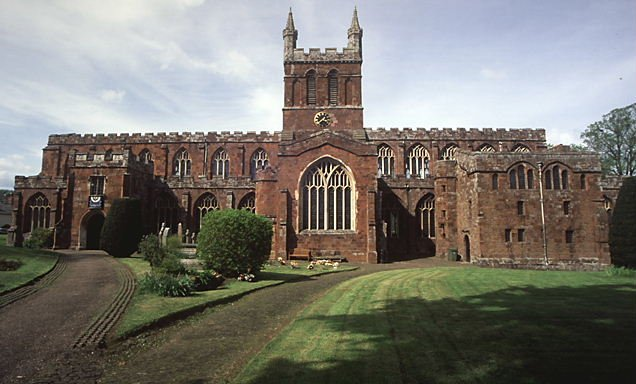
Photo: Mike Crowe · Wikimedia Commons, CC BY-SA 2.0 Crediton
Deep Devon hedgerows line the lanes into Crediton, where a long red-sandstone church glows warm at the head of the street. This was the birthplace of Saint Boniface, the eighth-century missionary who carried his faith across the sea to Germany. The land softens between the moors behind and the cider orchards of Taunton ahead.
-
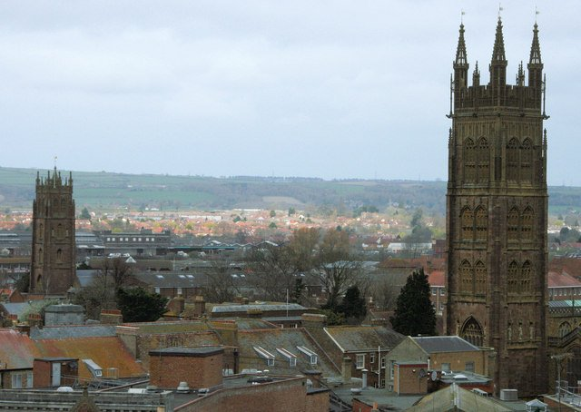
Photo: Nick Chipchase · Wikimedia Commons, CC BY-SA 2.0 Taunton, Somerset
Orchards and water meadows fill the Vale of Taunton Deane, cider country since the Middle Ages, and Taunton sits at its heart. To the west rise the Quantock Hills, designated in 1956 as the first Area of Outstanding Natural Beauty in England. From here the route turns north toward the Severn.
-
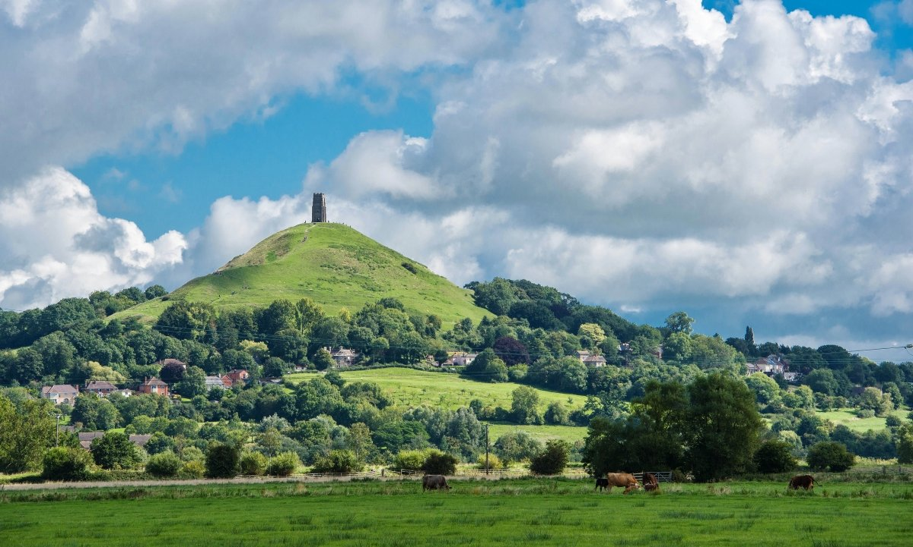
Photo: Eugene Birchall · Wikimedia Commons, CC BY-SA 2.0 Glastonbury Tor
The steep grass cone of Glastonbury Tor rises from the levels, crowned by the lone tower of St Michael, all that survives of a church destroyed by the earthquake of 1275. From the summit the Somerset Levels spread flat in every direction, and on misty mornings the hill appears to float, the old Isle of Avalon.
-
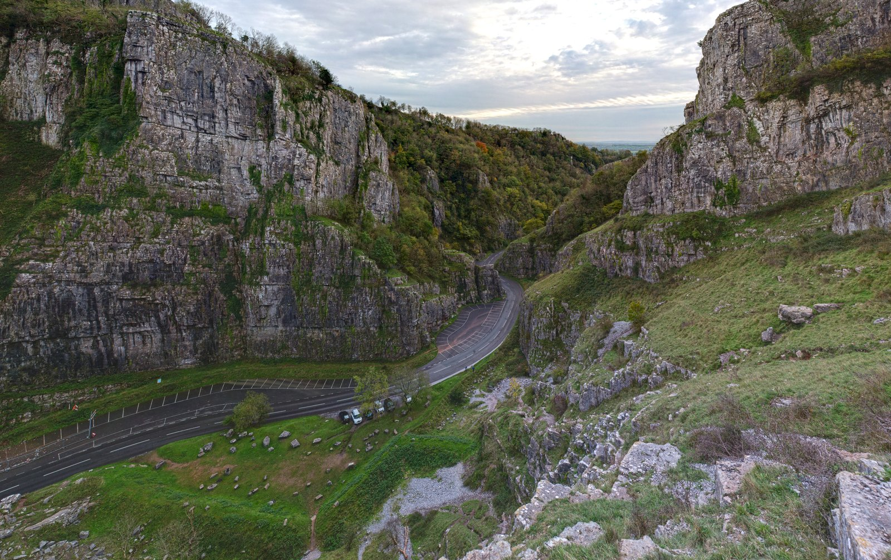
Photo: Diliff · Wikimedia Commons, CC BY-SA 3.0 Cheddar Gorge
Limestone cliffs rear nearly 140 metres above the road at Cheddar Gorge, the deepest gorge in England. In the caves below, Britain's oldest complete skeleton was found, a man who died some nine thousand years ago. Those same caves still hold the slow, cool air where the famous cheese was once aged.
-
Severn Estuary at Aust
At Aust the great tidal Severn opens out, crossed by two vast bridges into Wales — the older a suspension bridge, the newer a cable-stayed crossing — above the second-largest tidal range in the world. Across the churning brown water lie Chepstow and the wooded mouth of the Wye, where Offa's Dyke country begins.
-
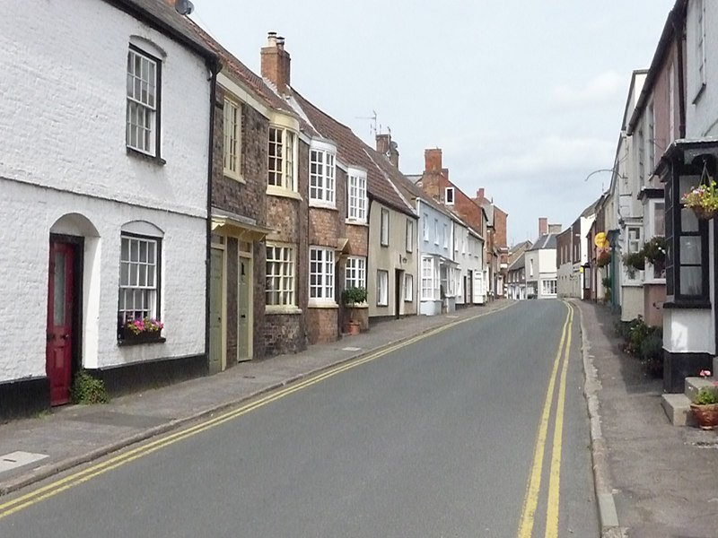
Photo: Chris Gunns · Wikimedia Commons, CC BY-SA 2.0 Berkeley
Berkeley's squat Norman castle has stood for nearly nine centuries, held by the same family throughout, and it was here that King Edward II met a grim end in 1327. The town also gave the world Edward Jenner, who pioneered the smallpox vaccine in a garden hut. The Severn runs broad and tidal just to the west.
-
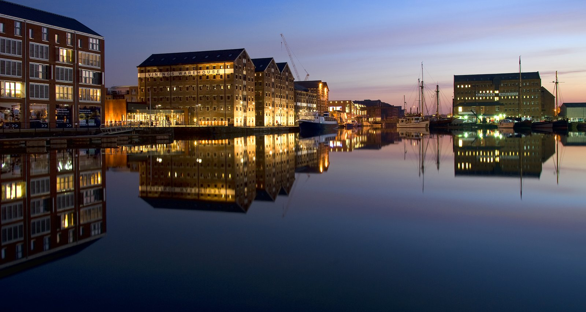
Photo: Saffron Blaze · Wikimedia Commons, CC BY-SA 3.0 Gloucester
The great cathedral at Gloucester lifts its tower high above the streets, and inside lies the tomb of that same King Edward II. Its cloisters, with their fan-vaulted ceilings, stood in for Hogwarts in the early films. Down at the historic docks, brick warehouses have been reborn around the basins where tall ships once unloaded.
-
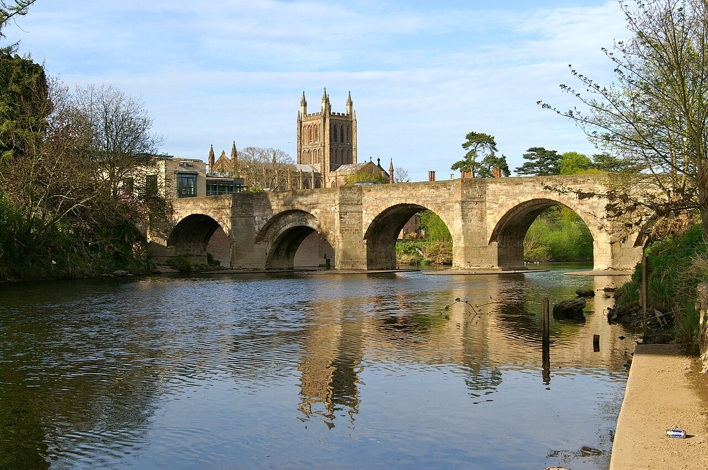
Photo: David Merrett · Wikimedia Commons, CC BY 2.0 Hereford & the Wye
Northward the borderland runs past Hereford, whose great Norman cathedral holds the Mappa Mundi, the largest medieval map of the world to survive. The River Wye loops through red-earth farmland and hop yards. Beyond rise the blue hills of Shropshire.
-
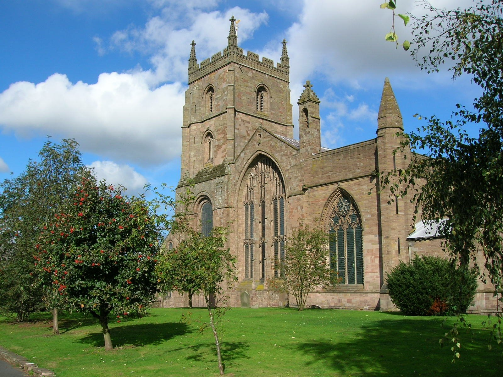
Photo: Tony Grist · Wikimedia Commons, Public domain Leominster
Black-and-white timbered houses lean over the cobbles in Leominster, an old wool town in the Marches light. Its priory keeps the last ducking stool used in England, a device once used to punish women branded as scolds. North of the town the river runs on toward the Severn loop and Tudor Shrewsbury.
-
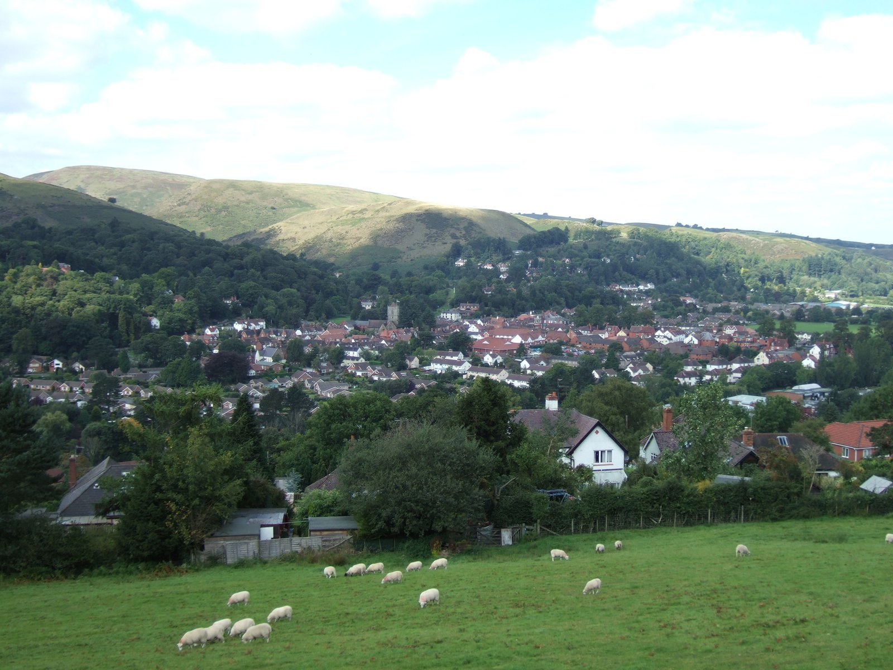
Photo: Dpaajones · Wikimedia Commons, CC BY-SA 3.0 Church Stretton
Beneath the long whaleback ridge of the Long Mynd, Church Stretton sits tucked into its valley. The Victorians called this place Little Switzerland and came for the healing spring waters. Up on the heath above, the heather runs purple in late summer and red grouse burst from underfoot.
-
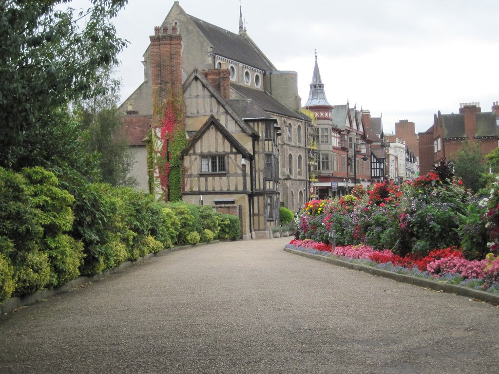
Photo: Nigel Thompson · Wikimedia Commons, CC BY-SA 2.0 Shrewsbury
A great loop of the River Severn wraps almost entirely around medieval Shrewsbury, its streets crowded with timber-framed Tudor houses. Charles Darwin was born here in 1809. To the north and east the land begins to rise toward the Peak District.
-
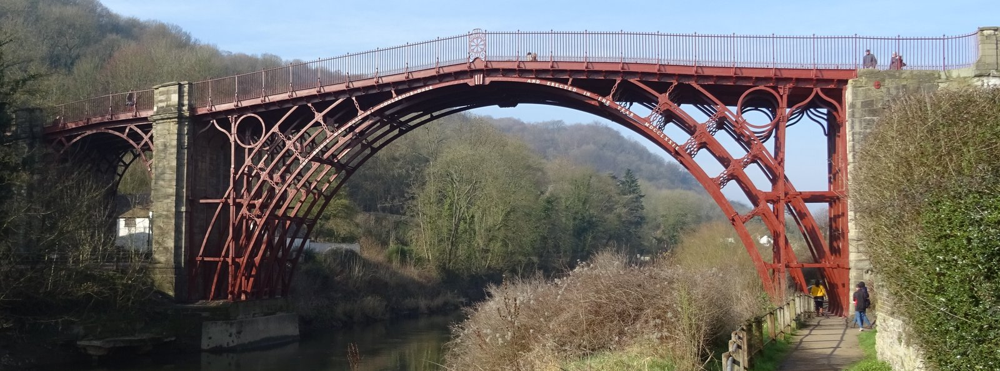
Photo: Tk420 · Wikimedia Commons, CC BY-SA 4.0 Ironbridge
The world's first major cast-iron bridge spans the Severn at Ironbridge, raised in 1779 and standing still. This narrow gorge is where the Industrial Revolution caught fire, the furnaces of Coalbrookdale roaring through the night. The river runs green and quiet now beneath the dark arch.
-
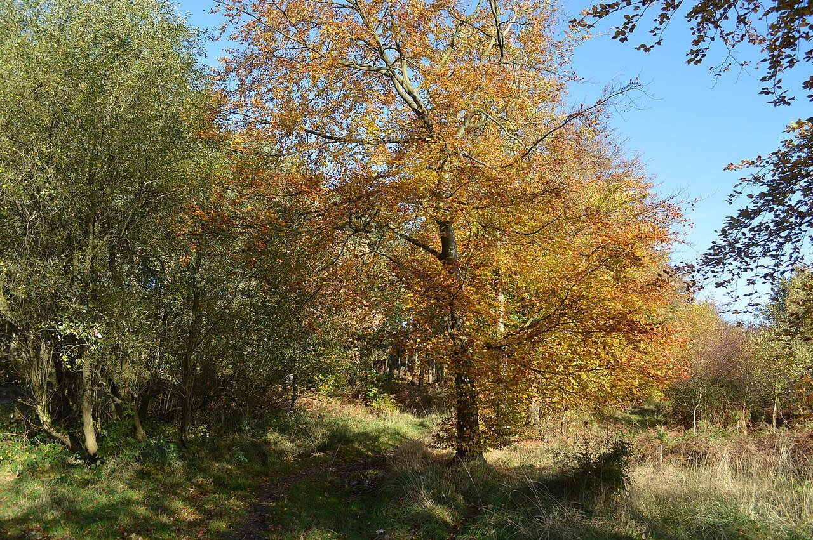
Photo: John M · Wikimedia Commons, CC BY-SA 2.0 Cannock Chase
Heath and birch woodland sweep across Cannock Chase, once a royal hunting forest. Herds of fallow deer still move through the trees at dawn and dusk. A German military cemetery rests quietly among the pines, a sober place to pause before the climb north toward the Peak.
-
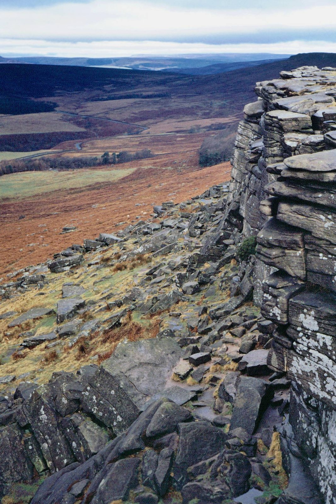
Photo: Vicky van Dal · Wikimedia Commons, CC BY-SA 4.0 Stanage Edge
Stanage Edge runs for four miles, a long gritstone rampart of dark rock that draws climbers from across the country. Below the crag the old millstones lie abandoned, left where they were cut when the trade collapsed. The Hope Valley and the high moors of the Peak open ahead.
-
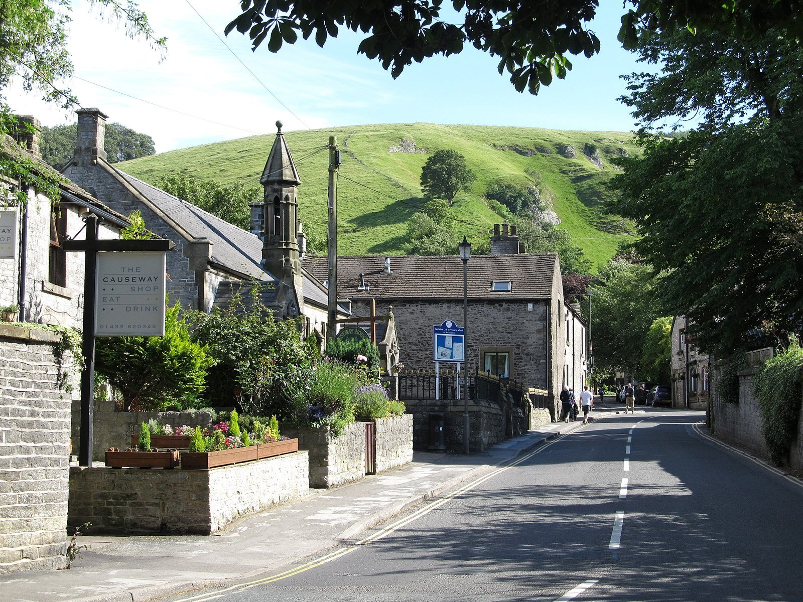
Photo: Ian Rob · Wikimedia Commons, CC BY-SA 2.0 Castleton
Castleton gathers beneath the broken keep of Peveril Castle, at the mouth of the Hope Valley. Below the village run the Blue John caverns, the only place on earth where that banded purple-and-yellow mineral is mined. Above looms Mam Tor, the shivering mountain, its eastern face forever slipping away.
-
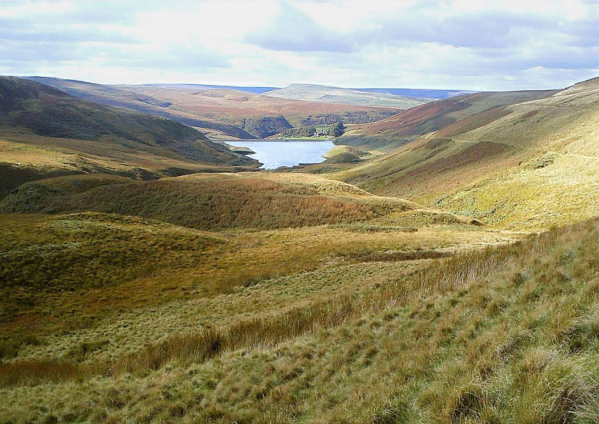
Photo: Unknown · Wikimedia Commons, Public domain Edale, Start of the Pennine Way
At Edale in the Peak District, the Pennine Way sets off on its 268-mile course up the backbone of England. Above the village broods Kinder Scout, the high moorland plateau where the 1932 Mass Trespass won the right to roam these hills. From here the gritstone edges lead north.
-
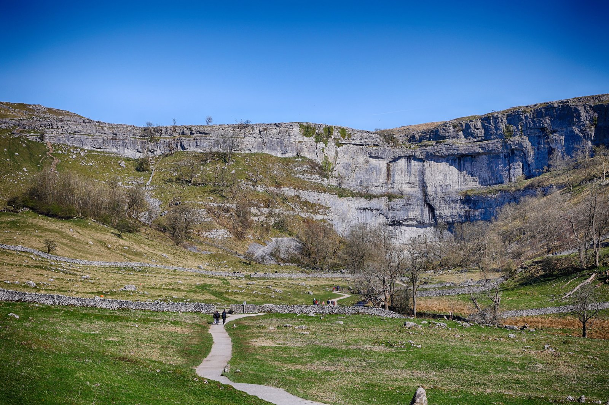
Photo: Tom Corser · Wikimedia Commons, CC BY-SA 3.0 Malham Cove
Malham Cove curves overhead, a vast wall of limestone 80 metres high, cut by a waterfall at the end of the last Ice Age. The stepped path up crosses a glittering limestone pavement that Wainwright thought the finest walking on the whole Pennine Way. The Yorkshire Dales roll on toward the high fells.
-
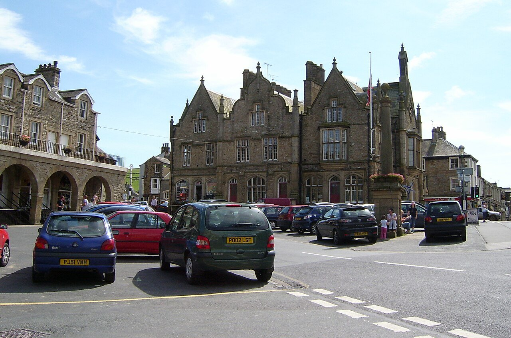
Photo: Cyberdemon007 at English Wikipedia · Wikimedia Commons, Public domain Settle
Down in the Ribble valley sits Settle, a market town where the famous Settle to Carlisle railway begins its long climb over the fells. Narrow yards and a cobbled square give the place an old, settled feel. Limestone scars gleam white on the hills above, the threshold of the Dales proper.
-
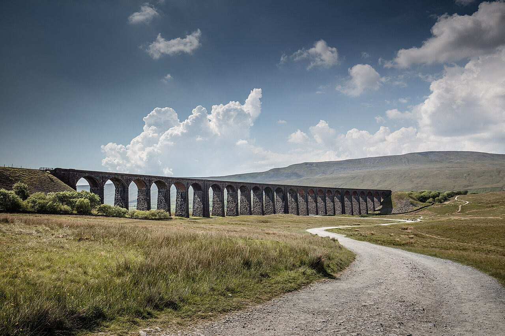
Photo: Michael D Beckwith · Wikimedia Commons, CC0 Ribblehead Viaduct
Twenty-four great stone arches stride across the bleak moor at Ribblehead, beneath the brooding bulk of Whernside. More than a hundred navvies died building this line through the 1870s, many of them buried in the little chapel graveyards nearby. Trains still rumble over the viaduct, tiny against the wide grey sky.
-
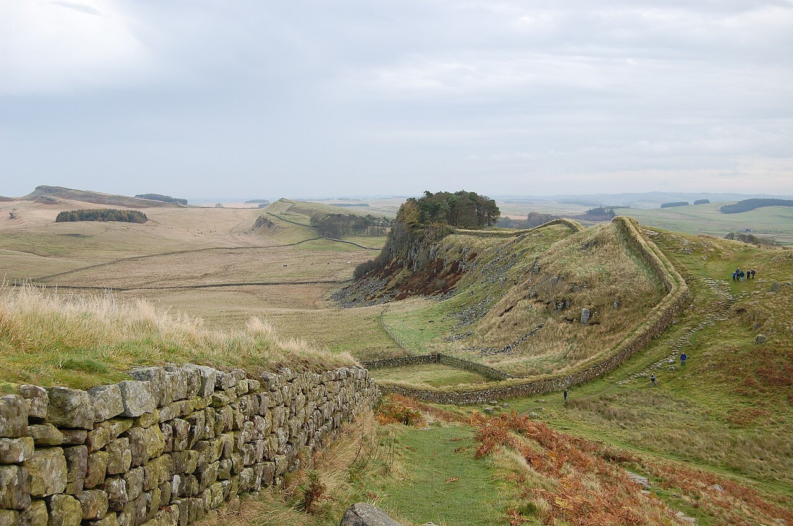
Photo: Steven Fruitsmaak · Wikimedia Commons, Public domain Hadrian's Wall
Hadrian's Wall rides the crags here, the Roman frontier thrown up around AD 122 to mark the northern limit of an empire. The path follows the great basalt cliffs of the Whin Sill past Housesteads fort, the wind cutting hard across the moor. Beyond lies the wild ground the Romans never held.
-
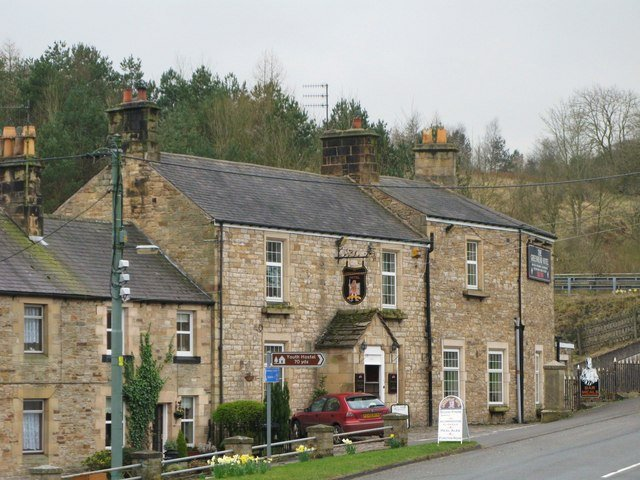
Photo: Mike Quinn · Wikimedia Commons, CC BY-SA 2.0 Greenhead
The small village of Greenhead sits hard against the line of Hadrian's Wall. Just east lie Walltown Crags, where the wall rides the dolerite cliffs in its most dramatic stretch, and the Roman fort of Carvoran once guarded the great frontier road nearby. The hills of the Borders rise green to the north.
-
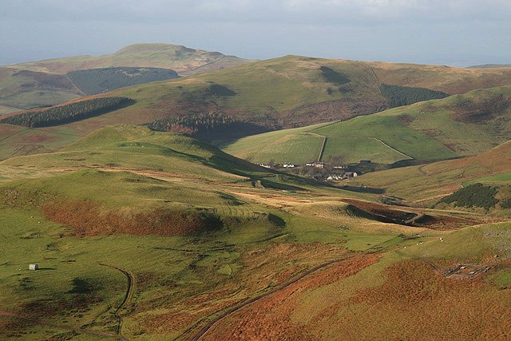
Photo: Walter Baxter · Wikimedia Commons, CC BY-SA 2.0 The Cheviots & Scottish Border
For 27 miles there is no village and no shelter across the lonely Cheviot Hills, the last and hardest stretch of the Pennine Way. Somewhere along the high grassy ridge you cross from England into Scotland. The descent to Kirk Yetholm and the Borders lies ahead.
-
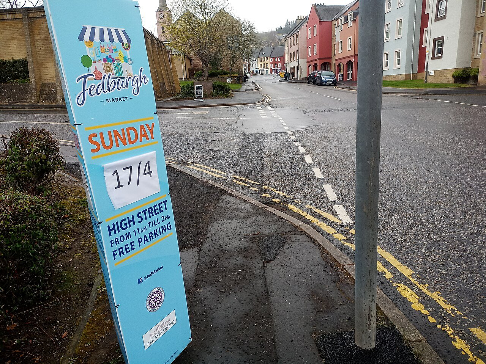
Photo: Victuallers · Wikimedia Commons, CC BY-SA 4.0 Jedburgh
The soaring ruin of a twelfth-century abbey dominates Jedburgh, sacked again and again in the long wars between Scotland and England. Mary Queen of Scots lay gravely ill in a house here in 1566, now kept as a museum. The Jed Water runs clear beneath the old bridge.
-
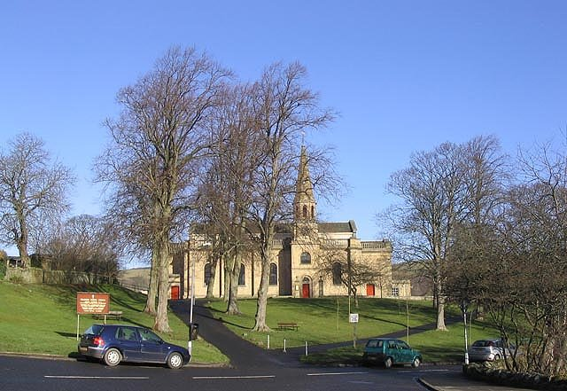
Photo: Walter Baxter · Wikimedia Commons, CC BY-SA 2.0 Melrose
Melrose sits beneath the triple peaks of the Eildon Hills, keeping a rose-red abbey said to hold the buried heart of Robert the Bruce. Sir Walter Scott loved this country and lived just upstream at Abbotsford. The Tweed slides past, broad and full of salmon.
-
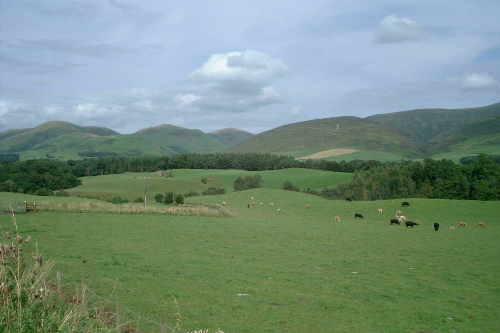
Photo: No machine-readable author provided. Klaus with K assumed (based on copyright claims). · Wikimedia Commons, CC BY-SA 3.0 Southern Uplands
The long green backs of the Southern Uplands roll away, the only sound the wind in the grass and the bleat of scattered sheep. Drovers and reivers once moved their herds and their plunder along these quiet glens. Far ahead the first blue line of the Highlands shows, while the Tweed leads down into Peebles.
-
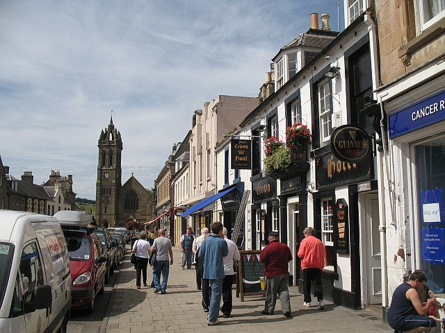
Photo: Richard Webb · Wikimedia Commons, CC BY-SA 2.0 Peebles
Peebles strings itself along the upper Tweed, where the river runs fast over gravel beds. Just upstream, Neidpath Castle stands guard on a bluff, a stark tower house above a bend in the water. The Border hills roll smooth and bare in every direction, sheep dotting their long flanks.
-
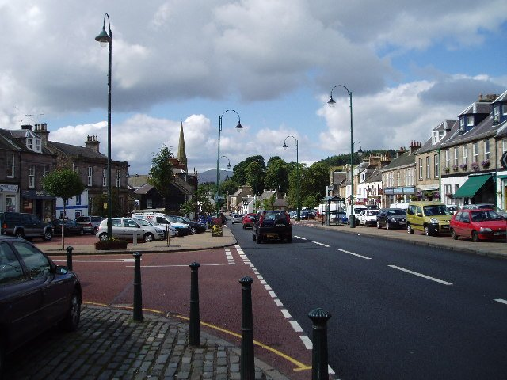
Photo: Kevin Rae · Wikimedia Commons, CC BY-SA 2.0 Biggar
An old burgh on the watershed between Tweed and Clyde, Biggar has a broad main street left over from its days as a market town. It keeps the only preserved gasworks in Scotland, and Scotland's only permanent puppet theatre — a hundred seats in a miniature Victorian music hall, run by the Purves family.
-
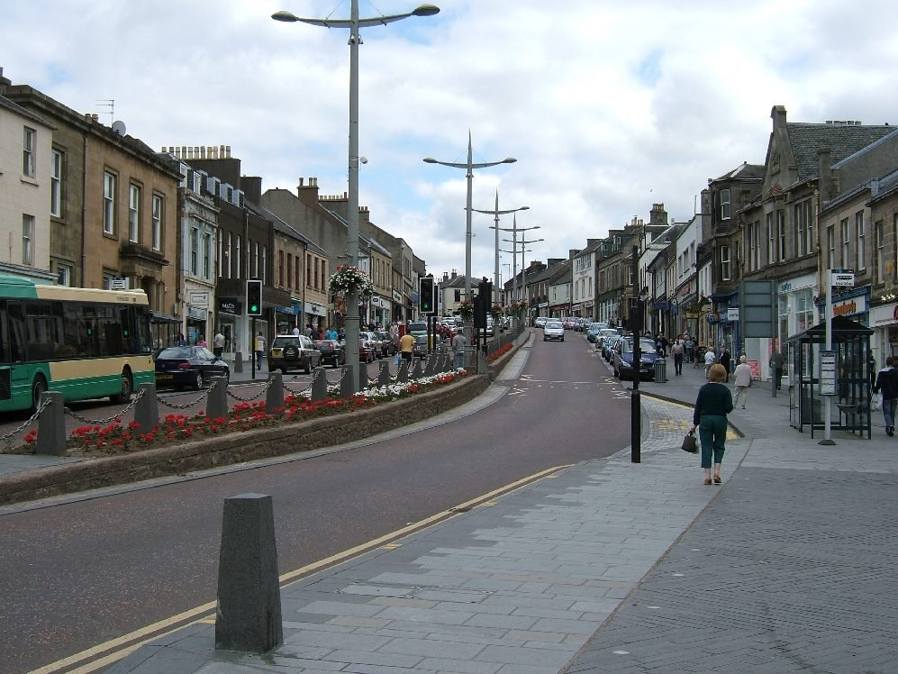
Photo: R Pollack at English Wikipedia · Wikimedia Commons, Public domain Lanark
Lanark perches above the gorge of the Clyde, where the river drops over a chain of waterfalls. Just below lies New Lanark, the model mill village built by the reformer Robert Owen and now a World Heritage Site. William Wallace is said to have struck his first blow against English rule in these streets.
-
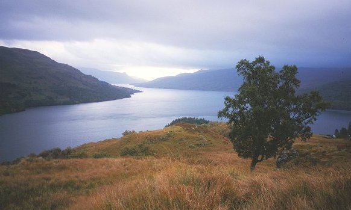
Photo: Richard Webb · Wikimedia Commons, CC BY-SA 2.0 Milngavie & Loch Lomond
The West Highland Way begins at Milngavie and climbs the wooded eastern shore of Loch Lomond, the largest stretch of fresh water in Britain by surface area. Ancient oakwoods cling to the bank, and the peak of Ben Lomond rises across the water. Here the Lowlands give way to the true Highlands.
-
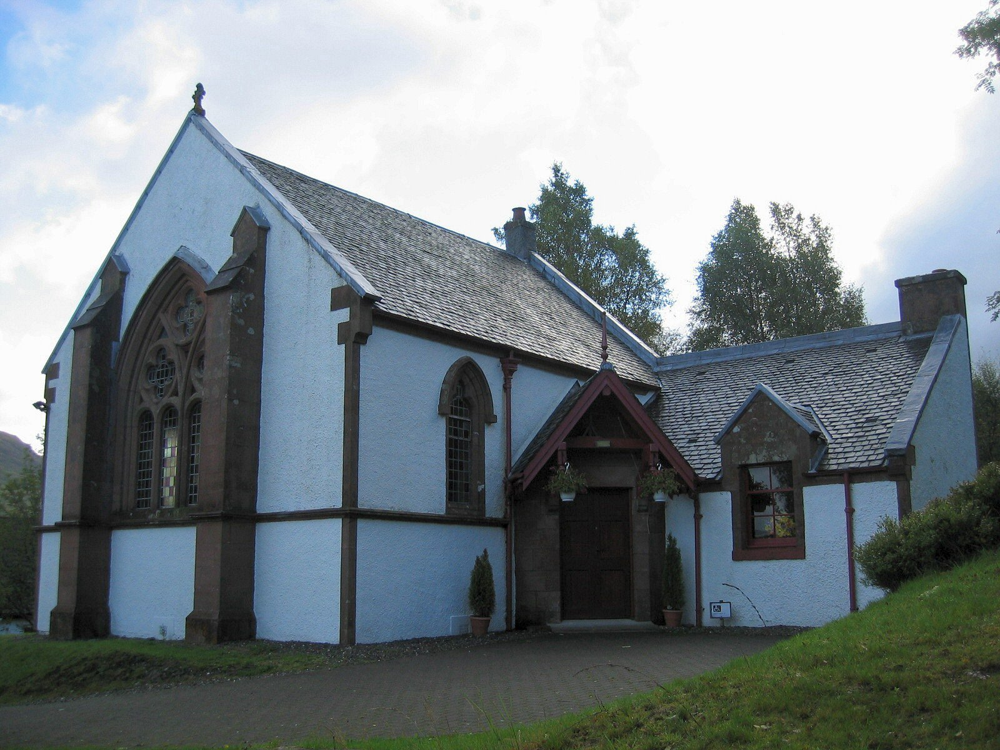
Photo: No machine-readable author provided. Tbc assumed (based on copyright claims). · Wikimedia Commons, Public domain Crianlarich
Ringed by high mountains, the crossroads village of Crianlarich draws both the West Highland Way and the railway through it. Walkers gather here to rest before the climb over the wild Rannoch country. The great Munros of Ben More and Stob Binnein rise steeply to the south.
-
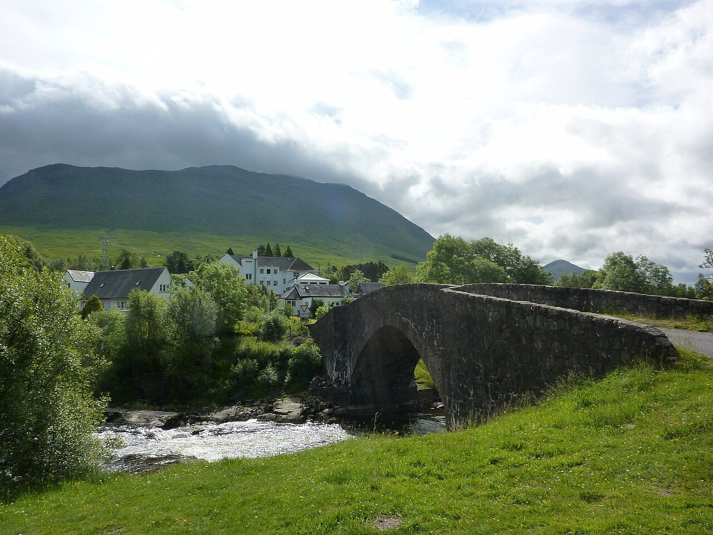
Photo: Andrew Bowden · Wikimedia Commons, CC BY-SA 2.0 Bridge of Orchy
A graceful eighteenth-century stone arch carries the old military road over the river at Bridge of Orchy. Beyond it opens the lonely expanse of Rannoch Moor, fifty square miles of bog, lochan and granite. The little station here is one of the most remote on the line.
-
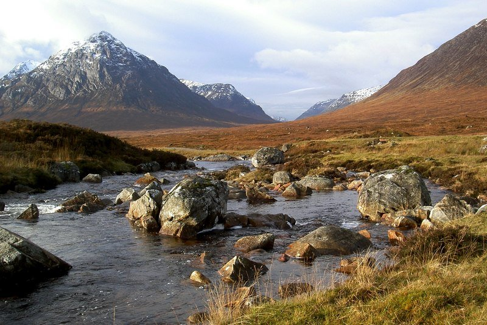
Photo: Alan Reid · Wikimedia Commons, CC BY-SA 2.0 Rannoch Moor & Glencoe
Rannoch Moor is one of the last great wildernesses of Europe, a roadless expanse of bog and lochan ringed by mountains. At its edge the pyramid of Buachaille Etive Mor guards the mouth of Glencoe, and then the Devil's Staircase climbs to the trail's highest point. The descent to Kinlochleven waits below.
-
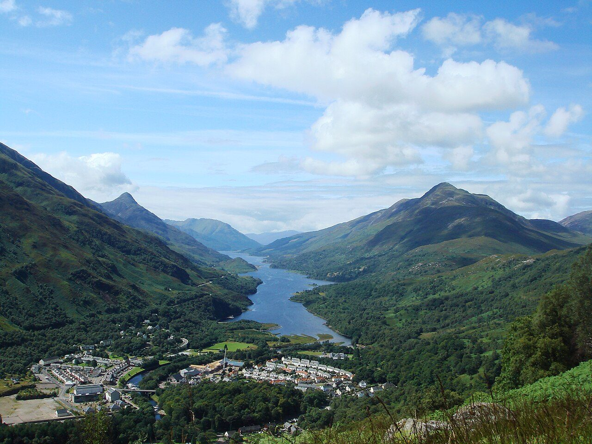
Photo: Rmaclean3 · Wikimedia Commons, Public domain Kinlochleven
Kinlochleven grew up at the head of a sea loch ringed by steep mountains, built around an aluminium smelter powered by one of Britain's earliest hydroelectric schemes. The water tumbles down through the Grey Mare's Tail falls above the houses. The Mamores rise sharp and inviting to the north.
-
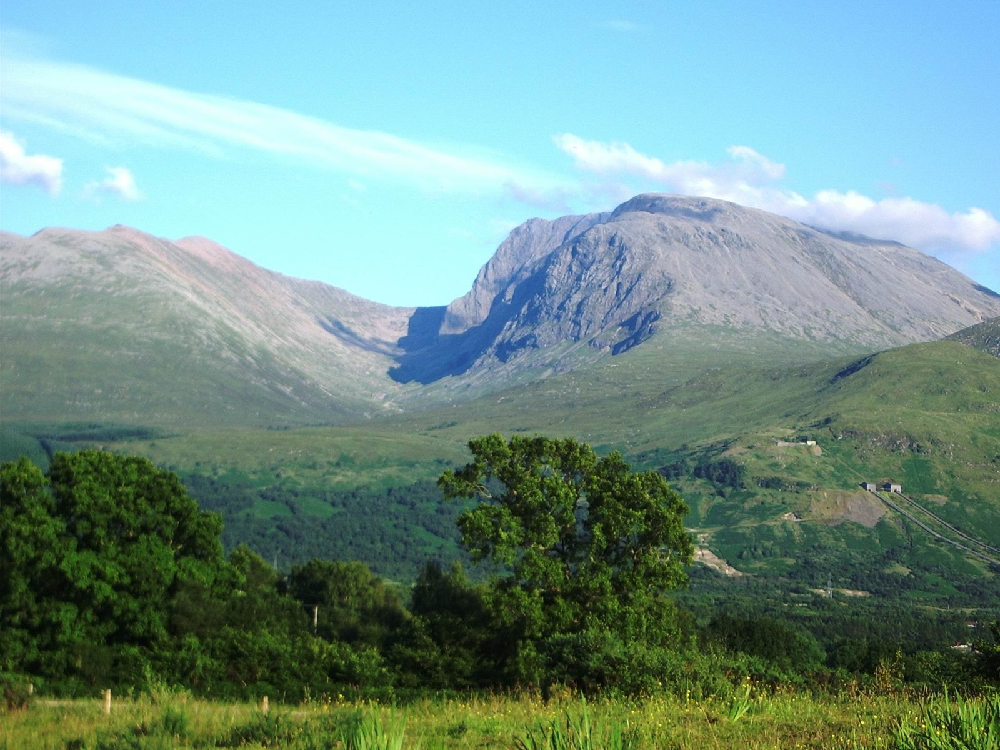
Photo: Thincat · Wikimedia Commons, Public domain Fort William, foot of Ben Nevis
Ben Nevis looms over Fort William, Britain's highest mountain at 1,345 metres, its summit more often than not lost in cloud. The West Highland Way ends here, but the route to the far north does not. The Great Glen, Scotland's great geological fault, runs dead straight to the north-east toward Loch Ness.
-
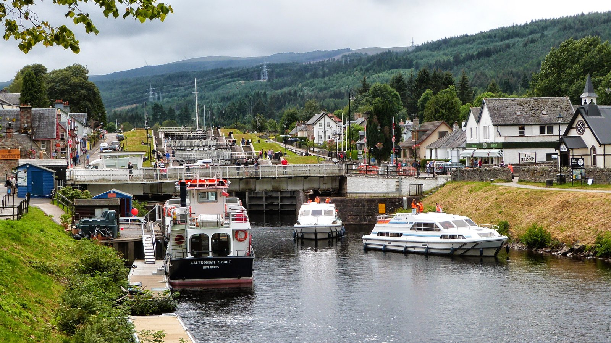
Photo: Peter Glyn · Wikimedia Commons, CC0 Fort Augustus
Five locks step the Caledonian Canal down into the southern end of Loch Ness at Fort Augustus. Boats queue as the gates fill and empty, watched by crowds on warm days. The dark water stretches away to the north-east, and a wooded path climbs the heights above it toward Inverness.
-
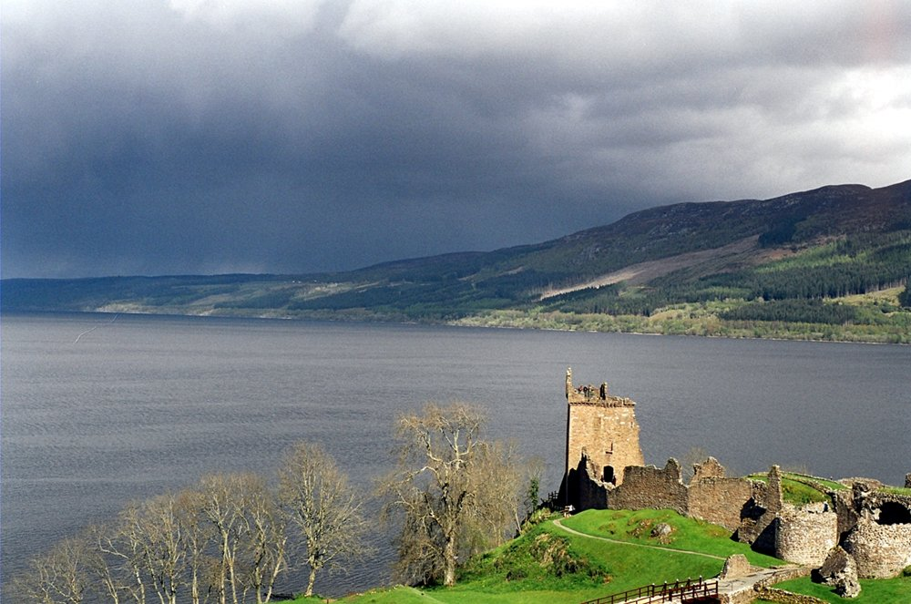
Photo: Sam Fentress · Wikimedia Commons, CC BY-SA 2.0 Loch Ness
Loch Ness lies dark below the forested heights of the Great Glen Way, the most famous loch in Scotland and its greatest by volume, holding more fresh water than every lake in England and Wales combined. Its depths have kept the legend of the monster alive for centuries. The path leads on toward Inverness.
-
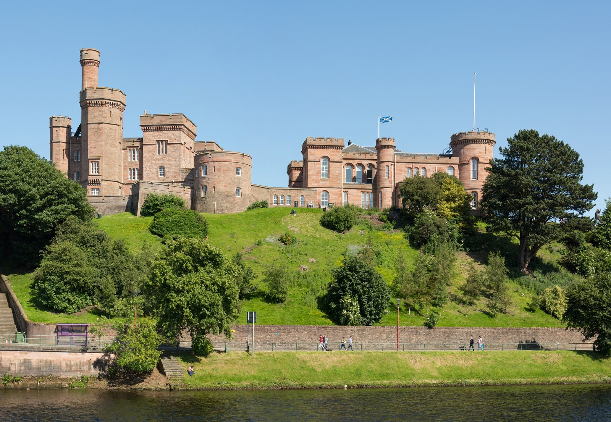
Photo: Diliff · Wikimedia Commons, CC BY-SA 3.0 Inverness
Inverness is the capital of the Highlands, where the Caledonian Canal meets the Moray Firth. Just to the east lies Culloden Moor, where the last pitched battle on British soil was fought in 1746. Now only the far north remains, the long coast road to the top of the mainland.
-
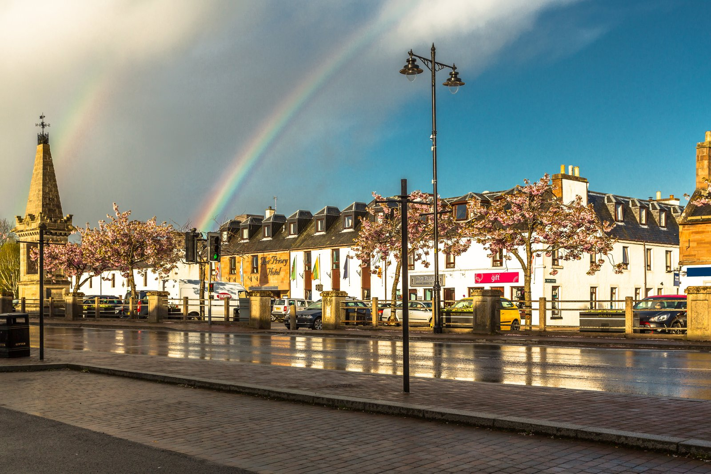
Photo: Alan Jamieson · Wikimedia Commons, CC BY-SA 3.0 Beauly
A roofless red-stone priory has stood at Beauly since the thirteenth century, founded by an order of French monks. Mary Queen of Scots is said to have given the place its name, from beau lieu, the beautiful place. To the east the firth opens broad and silver toward the far north.
-
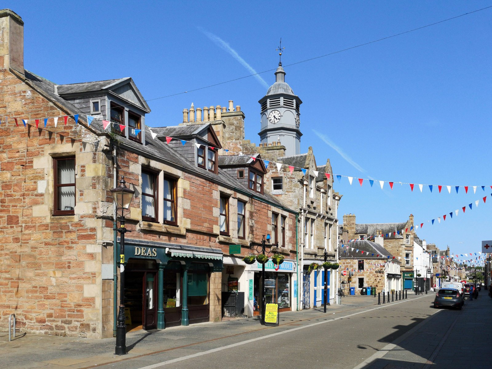
Photo: Julian Paren · Wikimedia Commons, CC BY-SA 2.0 Dingwall
Dingwall is an old Norse settlement, its name meaning the field of the thing, the meeting place of the assembly. The town sits at the head of the Cromarty Firth, where seals haul out on the mudflats. A tall monument on the hill honours the local-born general Sir Hector Macdonald.
-
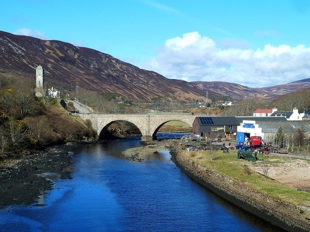
Photo: Mary and Angus Hogg · Wikimedia Commons, CC BY-SA 2.0 Helmsdale
Helmsdale was laid out as a planned fishing village at the mouth of its river, resettling families cleared from the glens inland. Gold was found in the burn above the town in 1869, sparking a small Highland rush, and flakes can still be panned there today. The North Sea opens grey and wide, the coast running on toward Wick.
-
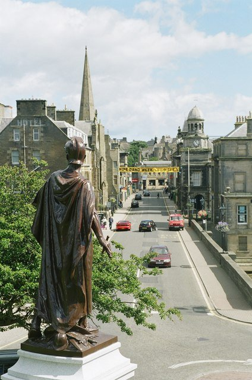
Photo: C L T Smith · Wikimedia Commons, CC BY-SA 2.0 Wick
Wick sits on the wild Caithness coast, once the busiest herring port in Europe, its harbour built by Thomas Telford. The land has flattened into windswept farmland and sea cliffs at the edge of the North Sea. John o' Groats is barely a day's walk away now.
-
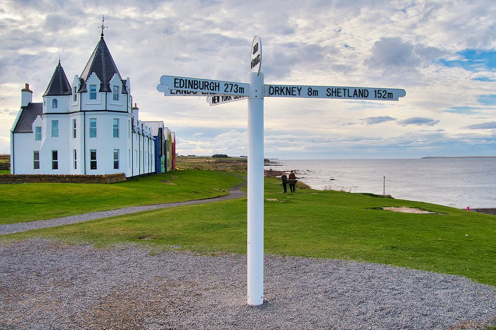
Photo: David Dixon · Wikimedia Commons, CC BY-SA 2.0 John o' Groats
John o' Groats marks the far north-eastern tip of mainland Scotland, its famous signpost the mirror of the one at Land's End, with the Orkney Islands floating across the Pentland Firth. Behind lies the whole length of Britain — Cornish granite, Pennine moor, Highland glen and Caithness sea — a thousand miles and more of country strung between two signposts at the ends of the land.
Walking the Length of Britain
Your watch is already counting these steps. Watch Walks spends them on the Length of Britain, all 1,745 km of it, and hands you each landmark as you reach it. There's no route recording, no account and no ads. The Inca Trail is free; this one is a one-time purchase with no subscription.
Other trails in Europe
- Camino de Santiago 780 km · Spain
- GR20 180 km · Corsica (France)
- Tour du Mont Blanc 170 km · France/Italy/Switzerland
- West Highland Way 154 km · Scotland
- Walker's Haute Route 180 km · France / Switzerland
- Kungsleden (The King's Trail) 440 km · Sweden